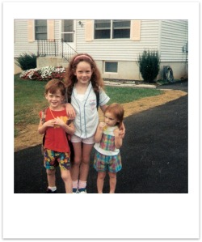
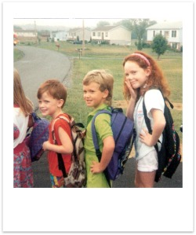

Kindergarten (93'-94' - Age 5)
I attended my first few years of school at Inwood Primary, which as of 2011 is located in the center of Inwood, now next to a CVS pharmacy and across from the Sheetz gas station. I went to school there from kindergarten until 2nd grade. There was a long set of stairs from the entrance that led to hallway with wooden floors, and there were paintings of the Charles Schultz “Charlie Brown” characters on the walls, and there was a huge playground behind the school, with tons of swing-sets, slides, jungle gyms, balance beams and other toys, and also a big circle track to run around.
I honestly can't remember the first day of school, but I'm sure it was a big event for me. I definitely remember the bus rides to and from school, that in most grades we would ride with the older children and let them off at their school, and then ride to ours.
 My kindergarten teacher was Mrs. Say, and as I recall she had short curly red hair. We had another assistant teacher as well, but I can't remember her name. I attended just half a day in kindergarten, I believe it was the morning and we went home around noon. In this class I met quite a few friends who I would be in school with throughout my first years of school, and then again in middle school and high school. One of my favorite parts of class as a kindergartner was working with the teacher to practice counting, and we were allowed to count as high as we could, and they would right down the number we made it to. Sometimes I would get into the fifties and then make a mistake, I'd say “57, 58, 59,...” and then accidentally go back to 51 one again. I was proud when I was able to make it all the way to one hundred.
I remember being gathered together as a class on the southeast side of the classroom by the window; we'd all sit on the floor and Mrs. Say would read a story to us. I also remember that was where I had my first experience being reprimanded in school. I was talking to a friend about our shoes sizes and we weren't listening to Mrs. Say, so the other teacher shushed us, and instantly I was silent. It seems funny that I remember this so clearly, but as mentioned I was always a very quiet and obedient child, so this was scary to me.
Overall I did very well in school. I was able to learn quickly, and had already spent time learning to read, count, and do simple math at home, so nothing was too challenging.
I can't personally remember this, but I'm told that for nearly a month straight I ended up not going school because we had an especially harsh winter, and if there was even just an hour delay my school would be canceled.
Continue to "First Grade" >>